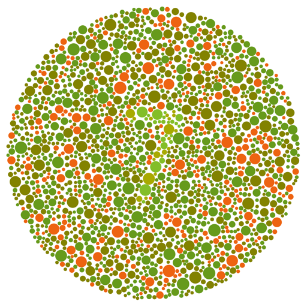

08-18-2023
Why isn't there more documentation on this?!
At work, I was tasked with creating a application for end users/clientele. Given that this work was slightly confidential, each library/software/method used had to be approved. Given that this app needed to authenticate users, existing options such as firebase could not be approved, and neither could any of the other libraries that were suggested. "Besides, there is a company LDAP server that most of our apps use to authenticate users", I was told. So began my difficult journey into learning about this technology.

In order to generate a substantial dataset, I would need to generate more images. The only method for me to do this would be to augment the images using Keras's image preprocessing library. The augmentations made to the images include: